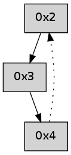

>> << IDX [start] -100 -25 -5 +0 +5 +25 +100 [270.128528118]
 Previous packets
----------------------------------------------------------------------
265.111299 beacon01(adaf) #0 coord=01,02,05,03,04 cycle=368.0ms assoc
-- color-indic=0 64 49 a4
265.121255 beacon02(adaf) #0 coord=01,02,05,03,04 cycle=368.0ms assoc 64 73 05
265.131256 beacon05(adaf) #0 coord=01,02,05,03,04 cycle=368.0ms assoc 64 38 49
265.141255 beacon03(adaf) #0 coord=01,02,05,03,04 cycle=368.0ms assoc 64 bb af
265.151260 beacon04(adaf) #0 coord=01,02,05,03,04 cycle=368.0ms assoc 64 f0 e3
265.162882 [Hello(4): seq=56 asym=2 sysInfo= stat=2:2,0,0,0]
----------------------------------------------------------------------
265.529400 beacon01(adaf) #0 coord=01,02,05,03,04 cycle=368.0ms assoc
-- color-indic=0 64 21 0f
265.539356 beacon02(adaf) #0 coord=01,02,05,03,04 cycle=368.0ms assoc 64 1b ae
265.549357 beacon05(adaf) #0 coord=01,02,05,03,04 cycle=368.0ms assoc 64 50 e2
265.559358 beacon03(adaf) #0 coord=01,02,05,03,04 cycle=368.0ms assoc 64 d3 04
265.569358 beacon04(adaf) #0 coord=01,02,05,03,04 cycle=368.0ms assoc 64 98 48
265.580992 [Hello(2): seq=555 sym=3 sysInfo= stat=3:11,0,0,0]
----------------------------------------------------------------------
265.947503 beacon01(adaf) #0 coord=01,02,05,03,04 cycle=368.0ms assoc
-- color-indic=0 64 f6 91
265.957459 beacon02(adaf) #0 coord=01,02,05,03,04 cycle=368.0ms assoc 64 cc 30
265.967459 beacon05(adaf) #0 coord=01,02,05,03,04 cycle=368.0ms assoc 64 87 7c
265.977463 beacon03(adaf) #0 coord=01,02,05,03,04 cycle=368.0ms assoc 64 04 9a
265.987460 beacon04(adaf) #0 coord=01,02,05,03,04 cycle=368.0ms assoc 64 4f d6
265.999100 [Hello(4): seq=57 asym=2 sysInfo= stat=2:3,0,0,0]
----------------------------------------------------------------------
266.365605 beacon01(adaf) #0 coord=01,02,05,03,04 cycle=368.0ms assoc
-- color-indic=0 64 f5 22
266.375561 beacon02(adaf) #0 coord=01,02,05,03,04 cycle=368.0ms assoc 64 cf 83
266.385562 beacon05(adaf) #0 coord=01,02,05,03,04 cycle=368.0ms assoc 64 84 cf
266.395561 beacon03(adaf) #0 coord=01,02,05,03,04 cycle=368.0ms assoc 64 07 29
266.405562 beacon04(adaf) #0 coord=01,02,05,03,04 cycle=368.0ms assoc 64 4c 65
266.417194 [Hello(2): seq=556 sym=3 sysInfo= stat=3:11,0,0,0]
----------------------------------------------------------------------
266.783707 beacon01(adaf) #0 coord=01,02,05,03,04 cycle=368.0ms assoc
-- color-indic=0 64 22 bc
266.793663 beacon02(adaf) #0 coord=01,02,05,03,04 cycle=368.0ms assoc 64 18 1d
266.803663 beacon05(adaf) #0 coord=01,02,05,03,04 cycle=368.0ms assoc 64 53 51
266.813663 beacon03(adaf) #0 coord=01,02,05,03,04 cycle=368.0ms assoc 64 d0 b7
266.823663 beacon04(adaf) #0 coord=01,02,05,03,04 cycle=368.0ms assoc 64 9b fb
266.835301 [Hello(4): seq=58 asym=2 sysInfo= stat=2:4,0,0,0]
----------------------------------------------------------------------
267.201808 beacon01(adaf) #0 coord=01,02,05,03,04 cycle=368.0ms assoc
-- color-indic=0 64 4a 17
267.211764 beacon02(adaf) #0 coord=01,02,05,03,04 cycle=368.0ms assoc 64 70 b6
267.221764 beacon05(adaf) #0 coord=01,02,05,03,04 cycle=368.0ms assoc 64 3b fa
267.231766 beacon03(adaf) #0 coord=01,02,05,03,04 cycle=368.0ms assoc 64 b8 1c
267.241766 beacon04(adaf) #0 coord=01,02,05,03,04 cycle=368.0ms assoc 64 f3 50
267.253394 [Hello(2): seq=557 sym=3 sysInfo= stat=3:12,0,0,0]
----------------------------------------------------------------------
267.619911 beacon01(adaf) #0 coord=01,02,05,03,04 cycle=368.0ms assoc
-- color-indic=0 64 9d 89
267.629867 beacon02(adaf) #0 coord=01,02,05,03,04 cycle=368.0ms assoc 64 a7 28
267.639869 beacon05(adaf) #0 coord=01,02,05,03,04 cycle=368.0ms assoc 64 ec 64
267.649868 beacon03(adaf) #0 coord=01,02,05,03,04 cycle=368.0ms assoc 64 6f 82
267.659869 beacon04(adaf) #0 coord=01,02,05,03,04 cycle=368.0ms assoc 64 24 ce
267.671494 [Hello(4): seq=59 asym=2 sysInfo= stat=2:5,0,0,0]
----------------------------------------------------------------------
268.038013 beacon01(adaf) #0 coord=01,02,05,03,04 cycle=368.0ms assoc
-- color-indic=0 64 8b 49
268.047969 beacon02(adaf) #0 coord=01,02,05,03,04 cycle=368.0ms assoc 64 b1 e8
268.057970 beacon05(adaf) #0 coord=01,02,05,03,04 cycle=368.0ms assoc 64 fa a4
268.067970 beacon03(adaf) #0 coord=01,02,05,03,04 cycle=368.0ms assoc 64 79 42
268.077969 beacon04(adaf) #0 coord=01,02,05,03,04 cycle=368.0ms assoc 64 32 0e
268.089573 [Hello(2): seq=558 sym=3 sysInfo= stat=3:12,0,0,0]
----------------------------------------------------------------------
268.456116 beacon01(adaf) #0 coord=01,02,05,03,04 cycle=368.0ms assoc
-- color-indic=0 64 5c d7
268.466072 beacon02(adaf) #0 coord=01,02,05,03,04 cycle=368.0ms assoc 64 66 76
268.476074 beacon05(adaf) #0 coord=01,02,05,03,04 cycle=368.0ms assoc 64 2d 3a
268.486073 beacon03(adaf) #0 coord=01,02,05,03,04 cycle=368.0ms assoc 64 ae dc
268.496073 beacon04(adaf) #0 coord=01,02,05,03,04 cycle=368.0ms assoc 64 e5 90
268.507690 [Hello(4): seq=60 asym=2 sysInfo= stat=2:6,0,0,0]
----------------------------------------------------------------------
268.874220 beacon01(adaf) #0 coord=01,02,05,03,04 cycle=368.0ms assoc
-- color-indic=0 64 34 7c
268.884177 beacon02(adaf) #0 coord=01,02,05,03,04 cycle=368.0ms assoc 64 0e dd
268.894178 beacon05(adaf) #0 coord=01,02,05,03,04 cycle=368.0ms assoc 64 45 91
268.904177 beacon03(adaf) #0 coord=01,02,05,03,04 cycle=368.0ms assoc 64 c6 77
268.914178 beacon04(adaf) #0 coord=01,02,05,03,04 cycle=368.0ms assoc 64 8d 3b
268.925815 [Hello(2): seq=559 sym=3 sysInfo= stat=3:13,0,0,0]
----------------------------------------------------------------------
269.292323 beacon01(adaf) #0 coord=01,02,05,03,04 cycle=368.0ms assoc
-- color-indic=0 64 e3 e2
269.302280 beacon02(adaf) #0 coord=01,02,05,03,04 cycle=368.0ms assoc 64 d9 43
269.312280 beacon05(adaf) #0 coord=01,02,05,03,04 cycle=368.0ms assoc 64 92 0f
269.322280 beacon03(adaf) #0 coord=01,02,05,03,04 cycle=368.0ms assoc 64 11 e9
269.332281 beacon04(adaf) #0 coord=01,02,05,03,04 cycle=368.0ms assoc 64 5a a5
269.343901 [Hello(4): seq=61 asym=2 sysInfo= stat=2:7,0,0,0]
----------------------------------------------------------------------
269.710426 beacon01(adaf) #0 coord=01,02,05,03,04 cycle=368.0ms assoc
-- color-indic=0 64 09 f4
269.720383 beacon02(adaf) #0 coord=01,02,05,03,04 cycle=368.0ms assoc 64 33 55
269.730383 beacon05(adaf) #0 coord=01,02,05,03,04 cycle=368.0ms assoc 64 78 19
269.740386 beacon03(adaf) #0 coord=01,02,05,03,04 cycle=368.0ms assoc 64 fb ff
269.750383 beacon04(adaf) #0 coord=01,02,05,03,04 cycle=368.0ms assoc 64 b0 b3
269.762002 [Hello(2): seq=560 sym=3 sysInfo= stat=3:14,0,0,0]